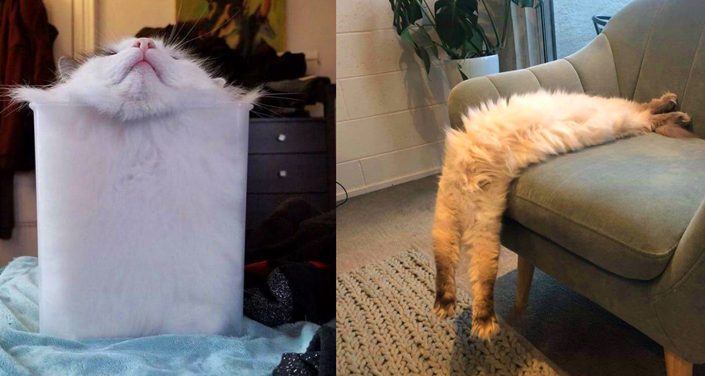

Про кошек
Кошка - одно из самых популярных домашних животных, что неудивительно. Она относится к животным-компаньонам, не
слишком прихотлива в уходе и довольно чистоплотна.
Породы кошек
- Шотландская кошка
- Тайская кошка
- Абиссинская кошка
- Сиамская кошка
- Европейская короткошерстная кошка
Шотландцы - самые милые кошки!
Подборка фотографий шотландцев
5 удивительных фактов о кошках
- Кошки любят забираться в пакеты и коробки

- Кошки - это жидкость!

- Если кошка находится возле вас и ее хвост дрожит - это наивысшая степень любви, которую она может выразить.
- Отпечаток носа у каждой кошки так же уникален, как и отпечатки пальцев у человека
- Кошки обычно правши, а вот коты - левши